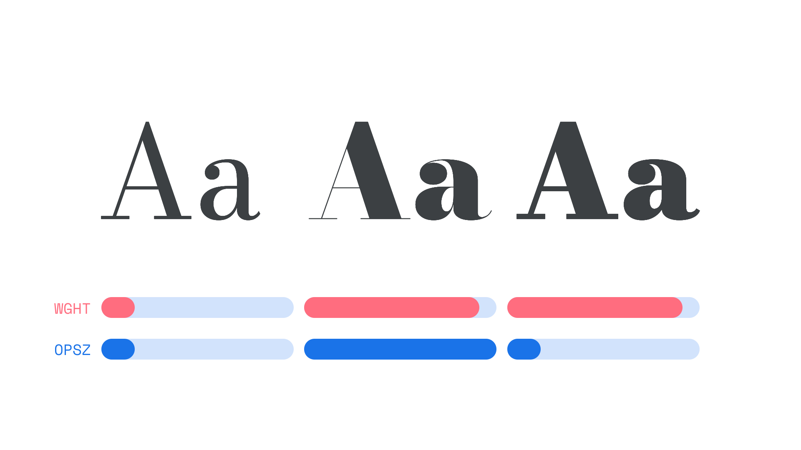

Variable Fonts
By Google Fonts Knowledge contributors · Google Fonts Knowledge.
Original article · Source on GitHub · CC BY-SA 4.0. Text, illustrations and existing credits reproduced from the licensed Knowledge repository. Open Shelf adapted the layout and links; these adaptations are also CC BY-SA 4.0. No endorsement implied.
Variable fonts—or, more specifically, OpenType Font Variations—are a relatively new font format introduced in 2016 that allow one font file to contain multiple stylistic variations, and thus break down the strict delineations of “traditional” (static) fonts. Weight, width, style, optical size, etc. can then be manipulated by the designer or adjusted based on contextual rules.

Variations can be combined. The first example has a light weight and body-like optical size; the second has a heavy weight and display-like optical size (note the higher contrast); the third also has a similarly heavy weight, but with a body-like optical size.
The variables within variable fonts are controlled by axes. Any aspect of the type design can be assigned to a user-controllable axis by the type designer. Each axis has a single value at any one time. Each axis starts from a default value and can go down to a minimum and up to a maximum value. Axes names and ranges (minimum, default, and maximum values) are font specific. Axes values are all combined to define an instance, equivalent to a “traditional” (static) font style.
There are three main benefits offered by variable fonts:
- To compress: the unified delivery of multiple instances—such as a set of different weights—in a single font file that is much smaller than the total file size of a collection of individual font files.
- To express: the control given to users to select axes values directly, such as a custom weight that is between two named instances of weight. For example, between Regular (400) and Medium (500), a weight of 427 might be just the right one to express a design intent perfectly.
- To finesse: the control given to programs to select axes values indirectly, based on context. For example, to automatically select an optical size instance using the current point size.